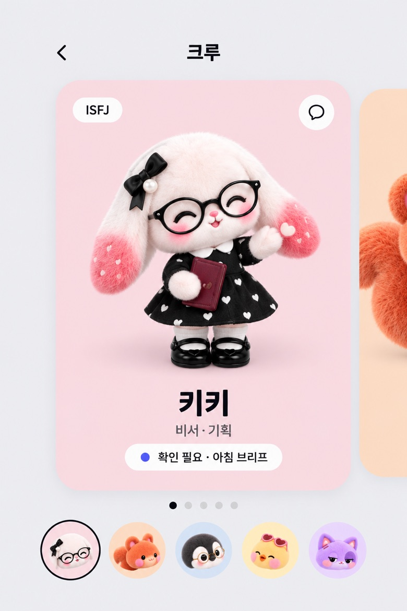
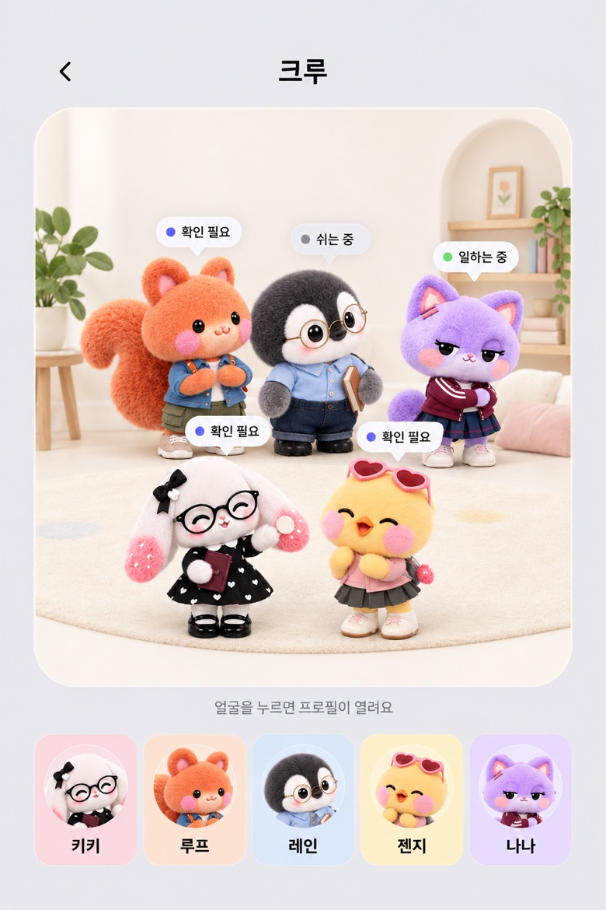
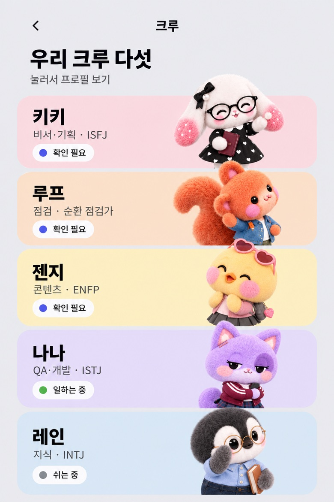
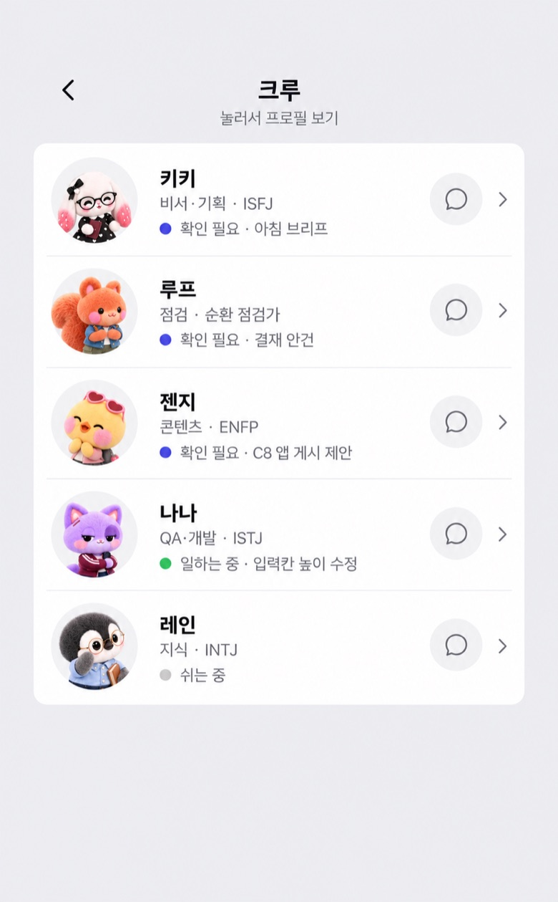
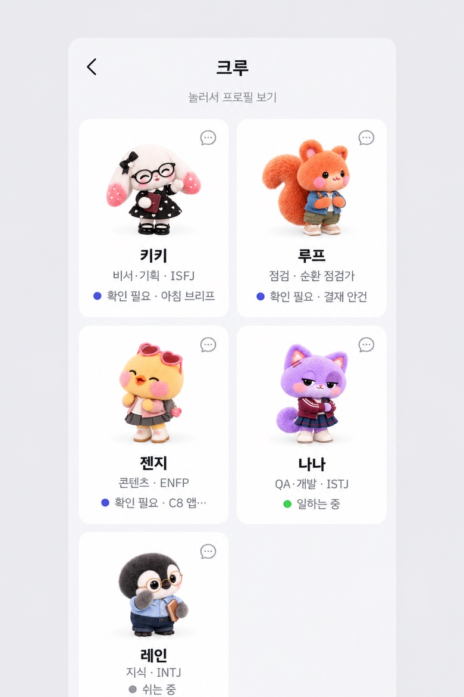
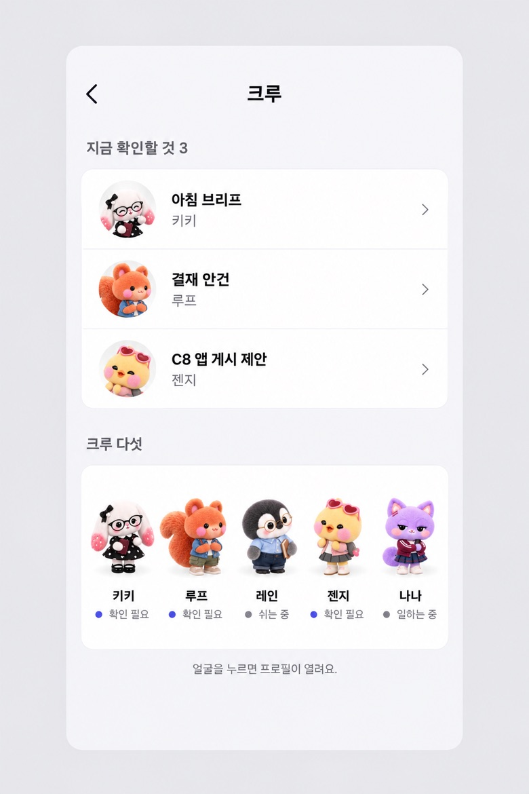

크루 목록 · 두 번째 판
정리된 목록 대신 크루가 주인공이 되는 쪽으로 다시 뽑았어요. 다섯 명마다 자기 색이 있어요.
D 수집 카드 넘기기
한 명씩 큰 카드로 보고 옆으로 넘겨요. 아래 얼굴을 누르면 바로 그 크루로 가요.

E 단체 사진 무대
다섯 명이 한 방에 모여 서 있고, 머리 위 말풍선으로 지금 상태를 보여요.

F 컬러 띠 명단
크루마다 자기 색 띠 위에 서고, 캐릭터가 띠 밖으로 살짝 튀어나와요.

첫 번째 판 세 안 (별로였던 것)
A 한 줄 목록

B 조용한 2열 카드

C 지금 먼저
